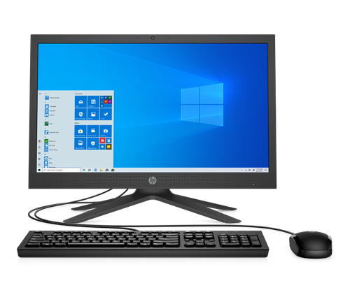

Es una máquina electrónica digital programable que ejecuta una serie de comandos para procesar los datos de entrada, obteniendo convenientemente información que posteriormente se envía a las unidades de salida.
Una computadora está formada físicamente por numerosos circuitos integrados y varios componentes de apoyo, extensión y accesorios, que en conjunto pueden ejecutar tareas diversas con suma rapidez y bajo el control de un programa (software).

¿Como inicio la historia de esta maquina?
Lejos de ser un invento de una persona en particular, la computadora es el resultado evolutivo de ideas de muchas personas relacionadas con áreas tales como la electrónica, la mecánica, los materiales semiconductores, la lógica, el álgebra y la programación
,Aunque todo comenzo cuando La primera computadora que se creo, fue la máquina analítica creada por Charles Babbage, profesor matemático de la Universidad de Cambridge en el siglo XIX.
La idea que tuvo Charles Babbage sobre un computador nació debido a que la elaboración de las tablas matemáticas era un proceso tedioso y propenso a errores.
✍ La Historia de la Computadora ✍
Historia
La historia de la computadora es el recuento de los eventos, innovaciones y desarrollos tecnológicos del campo de la informática y la automatización, que dieron origen a las máquinas que conocemos como computadoras, computadores u ordenadores.
Registra además su mejoramiento y actualización hasta alcanzar las versiones miniaturizadas y veloces del siglo XXI.Las computadoras, como todos sabemos, son las máquinas de cálculo más avanzadas y eficientes inventadas por el ser humano.
Están dotadas del suficiente poder de operaciones, la suficiente autonomía y velocidad como para reemplazarlo en muchas tareas, o permitirle dinámicas de trabajo virtuales y digitales que nunca antes en la historia habían sido posibles.
La invención de este tipo de aparatos en el siglo XX revolucionó para siempre la manera en que entendemos los procesos industriales, el trabajo, la sociedad y un sinfín de otras áreas de nuestra vida. Afecta desde el modo mismo de relacionarnos, hasta el tipo de operaciones de intercambio de información a escala mundial que somos capaces de realizar.
La historia de la computadora tiene largos antecedentes, que se remontan a las primeras reglas de cálculo y a las primeras máquinas diseñadas para facilitarle al ser humano la tarea de la aritmética. El ábaco, por ejemplo, fue un importante adelanto en la materia, creado alrededor de 4.000 a. C.
También hubo inventos muy posteriores, como la máquina de Blaise Pascal, conocida como Máquina de Pascal o Pascalina, creada en 1642. Consistía en una serie de engranajes que permitían realizar operaciones aritméticas. Esta máquina fue mejorada por Gottfried Leibinitz en 1671 y se dio inicio a la historia de las calculadoras.